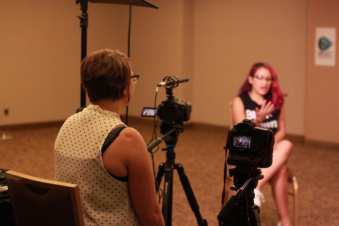
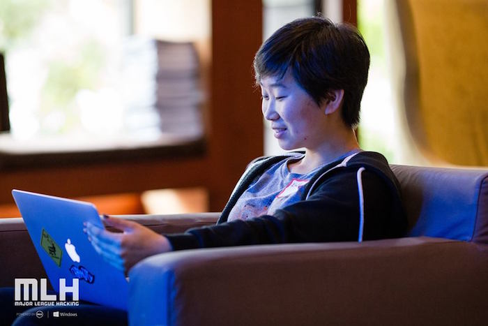
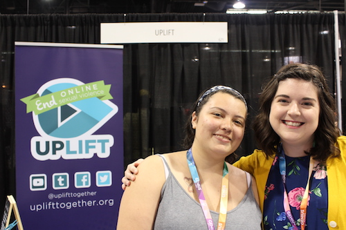
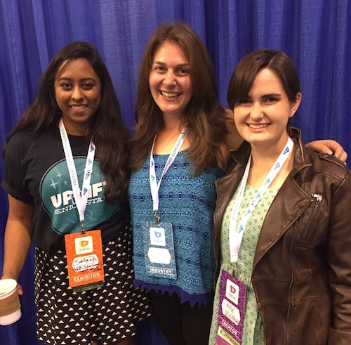
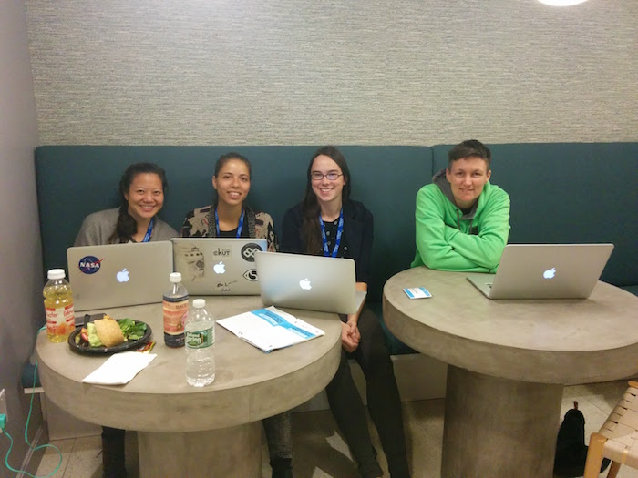
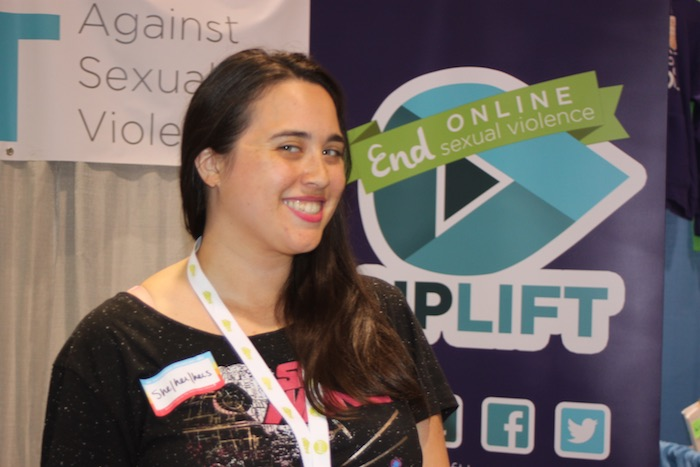

This position reports to the Video Team Manager and will require an average of 5 volunteer hours per week with larger commitments required for big projects.
We have open positons on our Finances team to work on Grant Writing, Crowdfunding, Budgets, etc. These positions report to the Operations Director with an average time commitment of 5 hours a week.
As the social media manager you would manage a small team of volunteers to create content for Uplift’s social media. This position reports to the Communications Director with a commitment with a commitment of 6-8 hours per week.
Our Conventions team works on all aspects of Uplift's presence at Conventions. This team reports to the Programs Director with an average time commitment of 5 hours per week.
This team reports to the Programs Director with flexible time commitments that can be seasonal or year round.
This position reports to the Communications Director with flexible time commitments.
